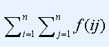

去年的Lucas非常喜欢数论题，但是一年以后的Lucas却不那么喜欢了。
在整理以前的试题时，发现了这样一道题目“求Sigma(f(i)),其中1<=i<=N”，其中 表示i的约数个数。他现在长大了，题目也变难了。
求如下表达式的值：

其中 表示ij的约数个数。
他发现答案有点大，只需要输出模1000000007的值。
| F.A.Qs | Home | Discuss | ProblemSet | Status | Ranklist | Contest | 入门OJ | ModifyUser Xeonacid | Logout | 捐赠本站 |
|---|
去年的Lucas非常喜欢数论题，但是一年以后的Lucas却不那么喜欢了。
第一行一个整数n。
一行一个整数ans，表示答案模1000000007的值。
对于100%的数据n <= 10^9。